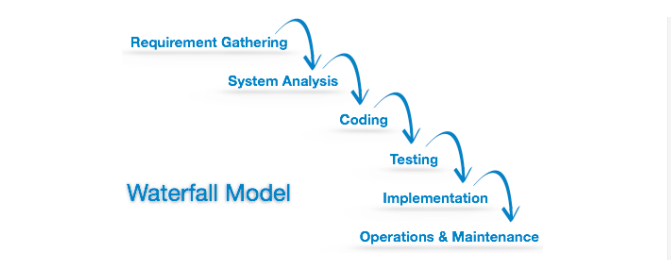
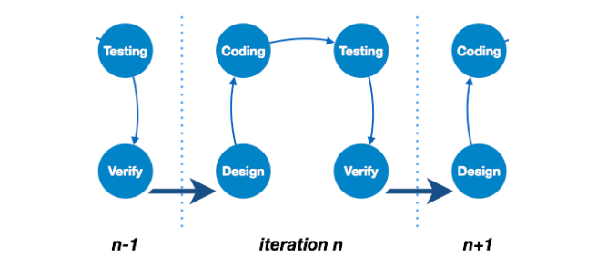
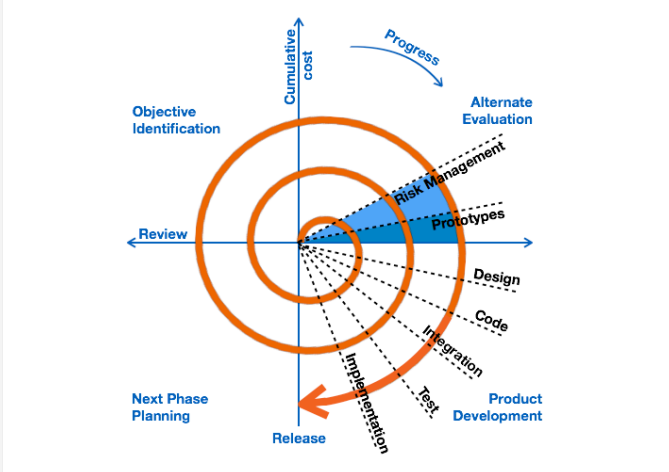
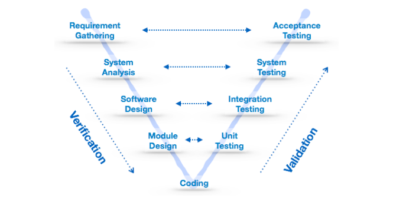

Software Development Life Cycle, SDLC for short, is a well-defined, structured sequence of stages software engineering to develop the intended software product.
SDLC Activities
SDLC provides a series of steps to be followed to design and develop a software product efficient SDLC framework includes the following steps:
Communication
This is the first step where the user initiates the request for a desired software product. He contacts the service provider and tries to negotiate the terms. He submits his request to the service providing organization in writing.
Requirement Gathering
This step onwards the software development team works to carry on the project. The team holds discussions with various stakeholders from problem domain and tries to bring out as much information as possible on their requirements. The requirements are contemplated and segregated into the user:
- studying the existing or obsolete system and software,
- conducting interviews of users and developers,
- referring to the database or
- collecting answers from the questionnaires.
Feasibility Study
After requirement gathering, the team comes up with a rough plan of software process. At this step the team analyzes if a software can be made to fulfill all requirements of the user and if there is any possibility of software being no more useful. It is found out, if the project is financially, practically and technologically feasible for the organization to take up. There are many algorithms available, which help the developers to conclude the feasibility of a software project.
System Analysis
At this step the developers decide a roadmap of their plan and try to bring up the best software model suitable for the project. System analysis includes Understanding of software product limitations, learning system related problems or changes to be done in existing systems beforehand, identifying and addressing the impact of project on organization and personnel etc. The project team analyzes the scope of the project and plans the schedule and resources accordingly.
Software Design
Next step is to bring down whole knowledge of requirements and analysis on the desk and design the software product. The inputs from users and information gathered in requirement gathering phase are the inputs of this step. The output of this step comes in the form of two designs; logical design and physical design. Engineers produce meta-data and data dictionaries, logical diagrams, data-flow diagrams and in some cases pseudo codes.
Coding
This step is also known as programming phase. The implementation of software design starts in terms of writing program code in the suitable programming language and developing error-free executable programs efficiently.
Testing
An estimate says that 50% of whole software development process should be tested. Errors may ruin the software from critical level to its own removal. Software testing is done while coding by the developers and thorough testing is conducted by testing experts at various levels of code.
Integration
Software may need to be integrated with the libraries, databases and other program(s). This stage of SDLC is involved in the integration of software with outer world entities.
Implementation
This means installing the software on user machines. At times, software needs post-installation configurations at user end. Software is tested for portability and adaptability and integration related issues are solved during implementation.
Operation and Maintenance
This phase confirms the software operation in terms of more efficiency and less errors. If required, the users are trained on, or aided with the documentation on how to operate the software and how to keep the software operational. The software is maintained timely by updating the code according to the changes taking place in user end environment or technology. This phase may face challenges from hidden bugs and real-world unidentified problem
Disposition
As time elapses, the software may decline on the performance front. It may go completely obsolete or may need intense upgradation. Hence a pressing need to eliminate a major portion of the system arises. This phase includes archiving data and required software components, closing down the system, planning disposition activity and terminating system at appropriate end-of-system time.
Software Development Paradigm
The software development paradigm helps developer to select a strategy to develop the software. A software development paradigm has its own set of tools, methods and procedures, which are expressed clearly and defines software development life cycle. A few of software development paradigms or process models are defined as follows:
Waterfall Model
Waterfall model is the simplest model of software development paradigm. It says the all the phases of SDLC will function one after another in linear manner. That is, when the first phase is finished then only the second phase will start and so on.
This model assumes that everything is carried out and taken place perfectly as planned in the previous stage and there is no need to think about the past issues that may arise in the next phase. This model does not work smoothly if there are some issues left at the previous step. The sequential nature of model does not allow us go back and undo or redo our actions.
This model is best suited when developers already have designed and developed similar software in the past and are aware of all its domains.
Iterative Model
This model leads the software development process in iterations. It projects the process of development in cyclic manner repeating every step after every cycle of SDLC process.
The software is first developed on very small scale and all the steps are followed which are taken in consideration. Then, on every next iteration, more features and modules are designed, coded, tested and added to the software. Every cycle produces a software, which is complete in itself and has more features and capabilities than that of the previous one.
Spiral Model
Spiral model is a combination of both, iterative model and one of the SDLC model. It can be seen as if you choose one SDLC model and combine it with cyclic process (iterative model).
This model considers risk, which often goes un-noticed by most other models. The model starts with determining objectives and constraints of the software at the start of one iteration. Next phase is of prototyping the software. This includes risk analysis. Then one standard SDLC model is used to build the software. In the fourth phase of the plan of next iteration is prepared.
V-Model
The major drawback of waterfall model is we move to the next stage only when the previous one is finished and there was no chance to go back if something is found wrong in later stages. V-Model provides means of testing of software at each stage in reverse manner.
At every stage, test plans and test cases are created to verify and validate the product according to the requirement of that stage. For example, in requirement gathering stage the test team prepares all the test cases in correspondence to the requirements. Later, when the product is developed and is ready for testing, test cases of this stage verify the software against its validity towards requirements at this stage.
This makes both verification and validation go in parallel. This model is also known as verification and validation model.
Big Bang Model
This model is the simplest model in its form. It requires little planning, lots of programming and lots of funds. This model is conceptualized around the big bang of universe. As scientists say that after big bang lots of galaxies, planets and stars evolved just as an event. Likewise, if we put together lots of programming and funds, you may achieve the best software product.

This model is not suitable for large software projects but good one for learning and experimenting.